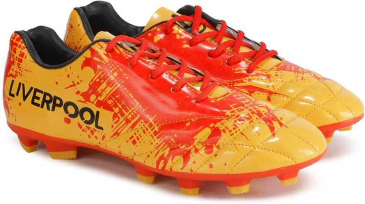
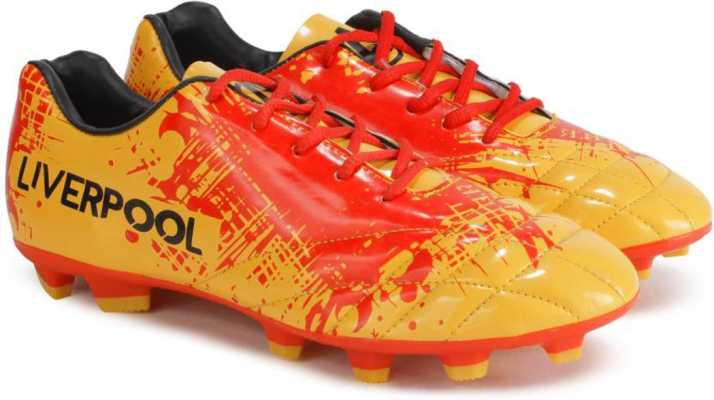

Для подробной информации - открой фотографию футболиста
Goalkeeper - вратарь/голкипер.
Вратарь может прикасаться к мячу руками в пределах своей штрафной площади.
Вратарская форма должна отличаться от формы других игроков команды, а также игроков команды соперника и судей.
Вратарь носит специальные перчатки, смягчающие удары и позволяющие ему лучше держать мяч.
Вратарь, покинувший штрафную площадь, считается обычным игроком.


 
